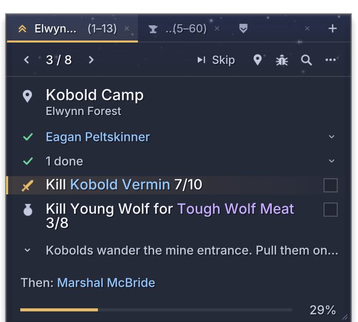

MAQUETTE — données d'exemple
Polestar_GroupFinder v0.1.0 · dessinée d'après UI.lua / Polestar.lua, pas une capture du jeu

Chercher un groupe
Recherche de groupe
Activer la recherche de groupe
Partager ma position sur la carte
Répondre aux recherches sur mes quêtes
Chercher un groupe (14)
Tester les canaux
CHANNEL
YELL
SAY
GUILD
Personne pour l'instant. Cliquez sur Chercher un groupe.
État 3 · aucun joueur : texte vide + cooldown de 20 s sur le bouton de recherche